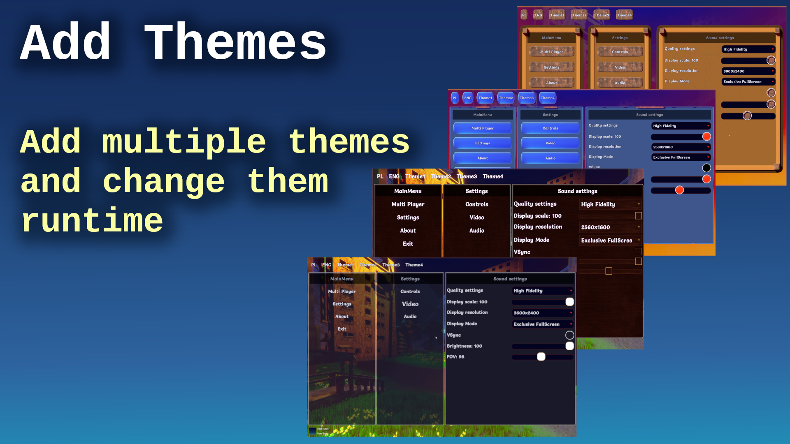
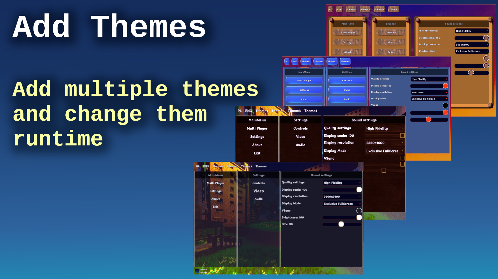
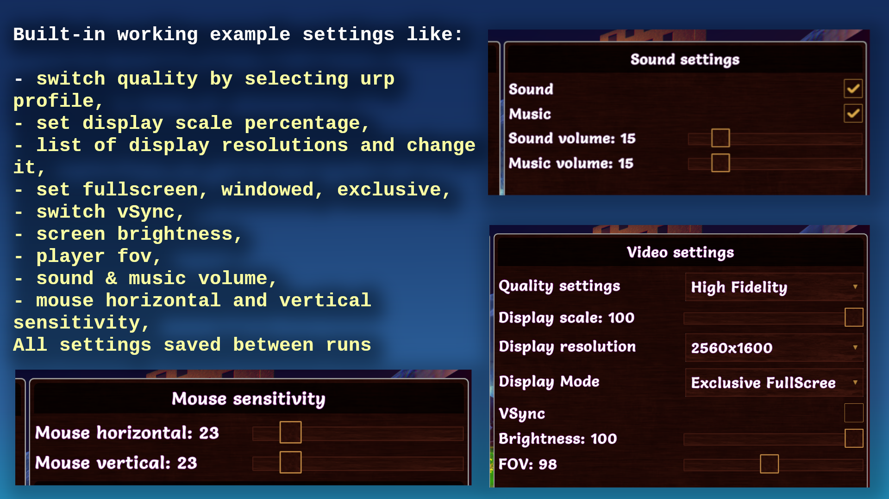
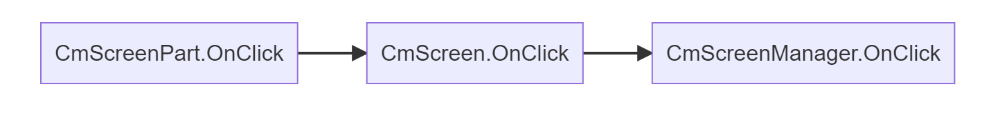

CoDriven Advanced UI
Getting Started ↵
Install
How to install
CoDriven Advanced UI require some packages if you want to experiment with multiplayer game added as sample to StefanWyszynski\CoDrivenAdvancedUI\Examples\ folder.
If you don't want to use this examples then you can remove that folder and you won't have to install below packages
- Mirror
If you want to use/analyze multiplayer game sample which is bundled with CoDriven Advanced UI, then You will need to install Mirror package from asset store.
Or you can add this to your project packages "com.mirror-networking.mirror": "https://github.com/vis2k/Mirror.git#release",
- Animation Rigging (Optional)
This is required if you want proper character animation in multiplayer sample.
you can install it from package manager or by adding to your procject packages "com.unity.animation.rigging": "1.2.1"
- xNode (optional) - not required by game but by graph editor
CoDriven Advanced UI has graph node editor build-in, but it is optional.
If you want to use it then you will have to unpack extension package located in CoDriven Advanced UI folder
then you will have to install base xNode external package (see https://github.com/Siccity/xNode) by using package manager or inserting this to your project package.json
"com.github.siccity.xnode": "https://github.com/siccity/xNode.git",
this is what I mean by graph editor:

CoDriven Advanced UI documentation version 1.0.0

Thank you for buying CoDriven Advanced UI. I hope it will speed up your workflow and help to finish your game faster 😄.
I am a professional Android developer with many years of experience, but I love creating games. During my game development journey, I came across a problem related to UI and decided to fix it by creating CoDriven Advanced UI. In android environment, I could conveniently create UI for apps and games using code. I decided to add this capability in this tool, thanks to this, you will be able to create UI by simply using code, which is generally easier than any existing solutions. Maybe just for me but try it and you will know what I mean.
- CoDriven Advanced UI documentation version 1.0.0
- The main benefits of CoDriven Advanced UI is:
- graph editor
- Note: this tool include: FULLY working 3D multiplayer FPS (mirror/LAN) with:
- Limitations of the current version of CoDriven Advanced UI:
- CoDriven Advanced UI components
Now released on the Unity asset store
https://assetstore.unity.com/packages/tools/gui/codriven-advanced-ui-multiplayer-game-311367
OUR DISCORD - JOIN NOW AND ASK QUESTIONS :)
The main benefits of CoDriven Advanced UI is:
- full source code included
- build in nodes with screen preview so you can connect them by actions (more about in graph editor section)
- easy language change and translation editor (built-in) (more about in translation editor section)


- easy theming and changing of the current theme! (more about in theming section)
 

- powerful styling in the c# code using probably all modifiers available in USS - no more raw CSS/USS pseudocode (it will be generated automatically based on your styles) (more about in modifiers section),
 - add your own custom Editors in Unity. You can check how Translation Editor was made - because it was made with its own code I mean CoDriven Advanced UI :)
- east event handling! (you can handle events on part of your screen, screen as a whole, globally, or the same event in many places at the same time) (more about in events section)
- CoDriven Advanced UI contains controls from UI Toolkit and a few more, like a floating window, and a draggable panel. This will be improved in the future (more about in visual controls section)
- implemented with observer pattern in mind to observe changes in UI or trigger UI changes from external events (more about in cmLive data section)
- multiple scenes with examples like simple one theme, simple two themes, a few game scenes with maps and main menu, other (more about in toturials section)
- easy passing player data to UI by event callback
- helper functions for your game and tools for multiplayer with a mirror
- included: FULLY working 3D multiplayer FPS (mirror/LAN) with main menu and in-game menu more about in multiplayer game section
- documentation in the code
- add your own custom Editors in Unity. You can check how Translation Editor was made - because it was made with its own code I mean CoDriven Advanced UI :)
- east event handling! (you can handle events on part of your screen, screen as a whole, globally, or the same event in many places at the same time) (more about in events section)
- CoDriven Advanced UI contains controls from UI Toolkit and a few more, like a floating window, and a draggable panel. This will be improved in the future (more about in visual controls section)
- implemented with observer pattern in mind to observe changes in UI or trigger UI changes from external events (more about in cmLive data section)
- multiple scenes with examples like simple one theme, simple two themes, a few game scenes with maps and main menu, other (more about in toturials section)
- easy passing player data to UI by event callback
- helper functions for your game and tools for multiplayer with a mirror
- included: FULLY working 3D multiplayer FPS (mirror/LAN) with main menu and in-game menu more about in multiplayer game section
- documentation in the code
Note: this tool include: FULLY working 3D multiplayer FPS (mirror/LAN) with:
- grappling hook weapon created from scratch using math in code for springs (without using the build in spring classes), so you can do more,
- car driving logic: spring camera attached to the seat and shooting while driving + free camera rotation + FPP/TPP camera during driving 😄,
- car models included (not top quality 😄)
- weapon recoil using spring,
- weapon attached to the hand bone
- player can jump
- weapon, hit muzzle flashes,
- sounds for many actions,
- health status during game,
- fully working game menu, pause menu, lobby,
- settings changes like resolution/refresh rate, sound, music, mouse sensitivity, and more. Changes is saved.
- multiple weapons like pistol, machinegun, grenade launcher, sniper with simple zooming, rocket launcher
- weapon recoil
- maps for the game and simple models like trees, houses, etc.
- you can play with friends over Lan :)



More about multiplayer games more in multiplayer game section
Please read the below brief overview of all important sections that will help you to understand how it works all together.
Limitations of the current version of CoDriven Advanced UI:
CoDriven Advanced UI is styling controls by generating USS code in the background. The system will generate all styles for all your themes and selectors from the code to the Resources/UssStyles folder and it will be loaded runtime.
Limitation: currently UI Toolkit enforces the limitation that USS code can't created and parsed runtime to style sheet because The USS importer makes heavy use of the AssetDatabase to resolve asset paths. To make the importer runtime-ready.
So that you will create theme, or more themes with styles for your controls and assign them to your controls. Everything in code. You can assign animations. For example hover animation. Then under the hood this tool will automatically generate uss styles in editor, and load them runtime - without your actions. You can of course change styles runtime by using fields from controls but not by USS code.
Because of that the new version of CoDriven Advanced UI will propably depend only on dynamic code generation, but current version is enought - it works like UI Toolkit, so don't worry.
You can:
- create styles for any visual look before build and set at runtime to change it dynamically runtime,
- create custom selectors and activate/deactivate it runtime (that will change the visual look and feel of control for certain conditions)
- dynamically change the visual of any control by accessing the stylesheet property of any CmControl.getVisualElement().stylesheet. So we can for example dynamically load any image and change it runtime.
Because of all of that - CoDriven Advanced UI has an additional custom selector that will allow you to execute runtime. So you want to make control half opacity and red in certain conditions runtime. You will create that style for it with your custom name and activate or deactivate that style runtime.
Below is an example how to change visual style of the toogle check mark icon for multiple states - when the mouse is hovered, when control is disabled, or checked:
var cmToggle = new CmToggle(..);
cmToogle.modifiers.CheckMark(
// create modifier for DEFAULT_STATE but we will add other state using ____NextSelector
new CmModifierImageAndBackground(CmSelector.DEFAULT_STATE)
.BorderWidth(0)
.BorderRadius(60.px())
.BorderColorRGBA(new Color32(255, 51, 4, 255))
//Now add modifiers for HOVER state
.____NextSelector(CmSelector.HOVER)
.Scale(1.2f)
//Now add modifiers for the DISABLED state
.____NextSelector(CmSelector.DISABLED)
.BackgroundColorRGBA(Color.white)
//Now add modifiers for the CHECKED state
.____NextSelector(CmSelector.CHECKED)
.BackgroundColorRGBA(Color.gray)
);
to learn more about changing visual look see theming, modifiers and visual controls
CoDriven Advanced UI components
Almost every game has a menu made up of several windows. CoDriven Advanced UI allows you to create multiple CmScreen windows. Switching between them, and other actions. The windows are managed by the CmScreenManager.
Each window can be divided into CmScreenPart sections. You can add controls both in the window and in the window section. A more detailed description below.
Screen Manager (CmScreenManager)
The main component of CoDriven Advanced UI is CmScreenManager which is a container for all screens and themes in your game. You can create many screen managers. For example: One for the main menu, and one for in-game. You Provide a list of CmScreen and a list of Themes CmThemeBase. Here you can handle global UI events by clicking on the buttons. To learn more about it click here - sceen manager section
Screen (CmScreen)
This is a single screen visible as a whole on the monitor screen currently. The screen is tightly coupled with a theme. If you don't use a theme then you can create a screen based on the default theme. Here you can handle screen-related UI events like clicking on the buttons.
To learn more about it click here - sceen section
Screen Part (CmScreenPart)
This is an optional element. It was added to divide the whole screen into sections. This way you can reuse certain sections on multiple screens. Like the game settings panel for changes in the main menu and in the game. This way it's more reusable. CmScreenPart is also usable to handle UI events (like button clicks or other events) and encapsulate this logic to this screen part.
Of course, you can handle events in higher order parts of your system like CmScreen or CmScreenManager you can handle screen part-related UI events like clicking on the buttons.
To learn more about CmScreenPart click here - screen part section
Theme (ICmThemeBase)
When you make your game you will probably want to create multiple themes. For example one for WHITE UI Theme, another one for DARK UI theme
CoDriven Advanced UI use base theme with abstract methods to extend them in implementations that will style your controls.
This way you can create multiple implementations and choose what implementation of theme you want to use for styling.
Even if you have one theme you must create class that will extend base tool class CmThemeBase
public abstract class CmExample1ThemeBase : CmThemeBase
{
public abstract void StyleButton(CmButton button);
}
then you will implement simple theme based on this:
public class CmExample1ThemeOne : CmExample1ThemeBase
{
public override CmButtonModifiers StyleButton()
{
// get style builder for button and set styles for two states - default, on mouse hover
var modifiers = CmButton.GetModifiersBuilder();
modifiers.Button(
new CmModifierText(CmSelector.DefaultState)
.AnimDuration(300) // 300 miliseconds
.BackgroundColorRGBA(Color.white)
.TextFontSize(30.Px())
// below section is for mouse hover state
.____NextSelector(CmSelector.Hover)
.Scale(1.2f, 1.2f) // scale x and y
.BackgroundColorRGBA(new Color(1f, 7.0f, 0.4f, 1.0f)) // rgba
);
return modifiers;
}
You will tell Screen Manager, or Screen that your base class CmExample1ThemeBase will be used for theming.
CoDriven Advanced UI will automatically generate uss styles file in editor and load it runtime so UI Toolkit part is hidden from you.
But you must assign styling method to your control so it will take this style
// create simple button with text and UI event handler from this screen to handle events in this screen
var button = new CmButton(this, text, GetCmUiEventsHandler());
// get theme assigned to this screen and use its function to style this button
button.SetStyle(GetTheme().StyleButton);
To learn more about theming click here - theming section
Controls
CoDriven Advanced UI is an adapter for UI toolkit components with an extension. Almost each UI Toolkit control is encapsulated with the CoDriven Advanced UI control. So for example UI Toolkit Button is encapsulated into CmButton in this tool.
To see all available controls at the moment please click here - controls section
Modifiers
Modifiers are properties that will change the look and feel of UI Toolkit controls like USS/CSS code, but they are managed in the code by custom method calls instead of uss pseudocode.
here is an example how modifiers look like for styling simple CmButton
// get style builder for button and set styles for two states - default, on mouse hover
var modifiers = CmButton.GetModifiersBuilder();
modifiers.Button(
new CmModifierText(CmSelector.DefaultState)
.AnimDuration(300) // 300 miliseconds
.BackgroundColorRGBA(Color.white)
.TextFontSize(30.Px())
// below section is for mouse hover state
.____NextSelector(CmSelector.Hover)
.Scale(1.2f, 1.2f) // scale x and y
.BackgroundColorRGBA(new Color(1f, 7.0f, 0.4f, 1.0f)) // rgba
);
to get more information about modifiers click here - modifiers section
UI events
UIEvents are mapped internally to simple class. This way you can easily use events in any place of your elements tree.
The whole menu is built onto CmScreenManager, which contains one or multiple CmScreen which could contain controls or CmScreenPart. These are containers of CmControls.
So basically there is a relation like this CmScreenManager <- CmScreen <- CmScreenPart <- CmControl
You can handle events the same way. The UI events are generated by CmControl. The event can be handled inside the function that creates CmControl, or upper in CmScreenPart or upper CmScreen, or globally in CmScreenManager. This way you can have a CmButton "Change theme to My favorite" and handle click event globally in CmScreenManager even if CmButton is created in CmScreenPart or CmScreen.
More about in UI events section.
Tutorials
CoDriven Advanced UI contains a few sample scenes but it will be better to read the tutorial section first (click here - tutorials section)
Ended: Getting Started
Changelog ↵
Changelog
v1.0.0
01/01/2025
New: * none
Improved: - none
Bugfix: * none
Ended: Changelog
Documentation ↵
Themes
Introduction
Each game should have at least one theme so theming is required, but if you won't use themes then you will have to use the default built in theme. The default theme will not change your style. It is the empty theme for filling requirment.
It is strongly recommended to use at least one theme to style your screen.
How to use
To use themes you have to create an abstract base class that extends ICmThemeBase interface like this:
public abstract class MyExampleTheme : CmThemeBase
{
public abstract CmButtonModifiers StyleButton(CmButton button);
}
MyExampleTheme class will be passed as a generic argument to:
- screen manager: CmScreenManager\<MyExampleTheme> more about here in screen_manager section.
- screens: CmScreen\<MyExampleTheme> here in screen section.
- (optionally) screen part: CmScreenPart\<MyExampleTheme> here in screen_part section.
The next thing to do is to create your implementation for this theme that will contain styling code for example CmButton control.
We will style the button with modifiers - please read about the modifiers here in modifiers section.
public class MyThemeWhite : MyExampleTheme
{
public override CmButtonModifiers StyleButton(CmButton button)
{
// each controls has its own set of methods to style. We will get style interface for this button
// image have other group of function, than for example text. We use different interface for styling different controls
// Because we don't want to style font for image - it has no sense
// so get modifiers for styling
var modifiers = CmButton.GetModifiersBuilder();
// style with modifiers
modifiers.Button(
// change background color and textfont size for the button in default state, so not for state like mouse hover over control or disabled state. Default state is for all states for control, but if you add styles for mouse hover then it will override this styles while mouse is hovering otherwise it will use default modifiers.
new CmModifierText(CmSelector.DEFAULT_STATE)
.BackgroundColorRGBA(Color.white)
.TextFontSize(30.px())
);
}
return modifiers;
}
}
optionally you can create a second theme like this (as an example)
public class MyThemeBlack : MyExampleTheme
{
public override CmButtonModifiers StyleButton(CmButton button)
{
var modifiers = CmButton.GetModifiersBuilder();
modifiers.Button(
new CmModifierText(CmSelector.DEFAULT_STATE)
.BackgroundColorRGBA(Color.black)
);
return modifiers;
}
}
As you can see we have two themes MyThemeWhite and MyThemeBlack.
These themes you will have to add to the screen manager, so that it will know when you will set your current theme that it is one of themes for your screens.
IMPORTANT NOTE TO UNDERSTAND how it works:
UI Toolkit works in a way that you will create uss files and assign them to your controls and the similar thing is with CoDriven Advanced UI tool.
You will have to add all your styling to methods in your base theme MyExampleTheme class to style your controls, or create abstract methods there and override it in your theme implementation classes like MyThemeWhite and MyThemeBlack, because the engine will loop through all your public methods in your base theme or in your implementations and will generate uss files for all of these methods. Then when you pass GetTheme().StyleButton method adress to SetStyle method of your control it will assign runtime your uss style generated during editor pass.
So lets add these themes to our screen manager.
// IMyExampleTheme is a base theme interface
public class MyScreenManager : CmScreenManager<MyExampleTheme>
{
...
//This is called by the system to add themes to the list
public override void OnAddSupportedThemes(List<MyExampleTheme> themes)
{
//Add all themes here for this screen manager
themes.Add(new MyThemeWhite());
themes.Add(new MyThemeBlack());
}
...
}
and now you can use themes in your screens, or change current theme in runtime. More about screen manager here in screen_manager section.
You will use the theme in part of your code responsible for creating controls. Here is some fragment of your CmScreen - remember this is not CmScreenManager but CmScreen:
// code for creating button with a style from your theme method StyleButton()
public CmButton createMainButton(string buttonTitle)
{
// Create a simple button with buttonTitle and UI event handler from this screen to handle events in this screen
var button = new CmButton(buttonTitle, cmUIEventsHandler: GetCmUiEventsHandler());
//Get the current assigned theme to this screen and use your function to style this button
//This theme could be one of your added themes: MyThemeWhite, MyThemeBlack
button.SetStlye(GetTheme().StyleButton);
return button;
}
Now you know how to add a theme and use it.
Time to read more about CmScreenManager, CmScreen, and CmScreenPart
Screen containers ↵
CmScreenManager
Introduction
CmScreenManager is the main container of screens. You can have multiple screen managers.
When you have multiple screen managers in one scene then you should show only one screen manager at once.
How to use
NOTE: Before you will read about screen managers please read about theming here.
To create your own CmScreenManager you will have to select if you will use theme or not.
NOTE: If you won't use the theme then you can pass the default builtin CmThemeDefault empty theme interface like in example below:
// CmThemeDefault will be used as a base theme and this is the empty theme for filling purposes
public class MyScreenManager : CmScreenManager<CmThemeDefault>
{
...
public override void OnAddSupportedScreens(List<CmScreen<CmThemeDefault>> supportedScreenList) {}
public override void OnAddSupportedThemes(List<CmThemeDefault> supportedThemes) {}
...
}
But in the theming section of the documentation we created a base interface for theme MyExampleTheme and two implementations of themes MyThemeWhite and MyThemeBlack so let's use it here:
// abstract base class MyExampleTheme for theming this window will be used as a base theme
public class MyScreenManager : CmScreenManager<MyExampleTheme>
{
public override void OnBindUiEventsHandler(CmUIEventsHandler eventsHandler)
{
// handle global actions on UI like clicks and other
eventsHandler.ButtonClick = button =>
{
// check globally if the user clicked the button, recognize the button by its name
if (button.GetName().Equals("here_will_be_your_button_name_to_check_for"))
{
//Here you will do some actions
}
};
}
public override void OnAddSupportedScreens(List<CmScreen<MyExampleTheme>> supportedScreens)
{
//Here you will add all your screens for this screen manager, and you will be able to change screen runtime
supportedScreens.Add(new MyMainScreen(this));
}
public override void OnAddSupportedThemes(List<MyExampleTheme> theme)
{
//Add all your themes here for this screen manager
themes.Add(new MyThemeWhite());
themes.Add(new MyThemeBlack());
}
public override void OnSetMainScreen()
{
//You can set the main screen here at the start if you have multiple screens. by default main screen is the first Screen
//All screens have their names as strings so you can create your screens as ENUM names and pass it here so there
// will be no magic strings :)
SetCurrentScreen("ScreenMain");
}
}
As you can see, your themes were added in OnAddSupportedThemes function. So the system will know how many styles will be used for theming and you can change the theme anytime runtime using:
SetCurrentTheme(new MyThemeBlack());
the SetCurrentTheme is available in your CmScreenManager, CmScreen, CmScreenPart
Definition:
public void SetCurrentTheme(THEME originalTheme, bool rebuildControlsWithNewTheme = false)
rebuildControlsWithNewTheme parameter is used to rebuild the whole screen when you change the theme
Other functionality
MyScreenManager from the above example has also functions like:
- OnBindUiEventsHandler() - responsible for handling UI events emitted by controls created inside screens. Because these controls were created inside you will handle their events inside screens, but sometimes you will have to handle events globally. To reduce code duplication on multiple screens you could handle this event here. More about events
- see the ui_events section here ,
- OnAddSupportedScreens() - here you will add all your screen instances for this screen manager.
You will be able to use setCurrentScreen to switch screen runtime.
public virtual void SetCurrentScreen(string currentScreenName, bool makeContent = true)
this function is available in CmScreenManager, CmScreen, CmScreenPart
When game starts the first screen what will be shown is set in:
OnSetMainScreen() - which is called by the system on start so you can set the main screen here.
NOTE: If you won't set the screen here then the first screen from screens list in OnAddSupportedScreens() will be used
CmScreenManager has more functionality. Here are more methods overview:
- MakeScreenContent() - you will use it to rebuild the whole screen (if you want to refresh the screen)
- UIDocument GetUIDocument() - you can get the current bound UIDocument
- List\<string> GetScreensNames() - will return names of all screens added to this CmScreenManager
- HideMenu() - will deactivate UI to hide CmScreenManager from the screen. So there will be no screens visible
- ShowMenu(string currentScreenName) - will activate UI to show CmScreenManager on screen.
When you show the screen the manager you will have to tell the system which Screen to show by passing screen name to currentScreenName parameter
- SetUserData(Object data) - while in the game you can pass your own data as an object to data parameter.
// in your monobehaviour - somewhere in your player game logic
public void UpdateUI()
{
if (_screensManager == null)
{
_screensManager = CmScreenManagerHelper.FindScreenManager();
}
_screensManager.SetUserData(someUserData);
}
This data change will trigger callback OnUserDataChange for your active screen (CmScreen and other components like CmScreenPart)
public virtual void OnUserDataChange(Object data)
so you can update UI state there
public class PlayerInGameScreen : CmScreenPart<MyExampleTheme>{
...
public override void OnUserDataChange(Object data)
{
if (data is PlayerData playerData)
{
_userName.SetText(playerData.UserName);
_healtBar.SetProgress(playerData.Health);
}
}
}
Complete example
here is a complete example of CmScreenManager implementation from "One Theme scene example"
public class CmExample2ThemesScreenManager : CmScreenManager<CmExample2ThemesBase>
{
public override void OnBindUiEventsHandler(CmUIEventsHandler eventsHandler)
{
// handle global actions on UI like clicks and other
eventsHandler.ButtonClick = @base => { };
}
public override void OnAddSupportedScreens(List<CmScreen<CmExample2ThemesBase>> supportedScreenList)
{
//Add all screens here for this screen manager
supportedScreenList.Add(new CmSimpleThemeMainScreen(this));
}
public override void OnAddSupportedThemes(List<CmExample2ThemesBase> themeBases)
{
//Add all themes here for this screen manager
themeBases.Add(new CmExample2ThemeOne());
themeBases.Add(new CmExample2ThemeTwo());
}
public override void OnSetMainScreen()
{
//You can set the main screen here at the start if you have multiple screens. by default main screen is the first Screen
// added to supportedScreenList in above OnAddSupportedScreens(..) function
SetCurrentScreen(CmSimpleThemeMainScreen.MAIN_SCREEN_NAME);
}
}
CmScreen
- CoDriven Advanced UI documentation
- CmScreen
- Introduction
- How to use
- GetScreenName()
- bindUIEventsOnStart()
- OnMakeScreenContent(ScreenContentBuilder contentBuilder) the most important section
- Complete example of CmScreen implementation from "One Theme scene example"
Introduction
CmScreen is a screen container for controls on your game screen. You can have multiple screens but you show only one screen at once. For example map select screen, main menu screen or in game lobby screen
How to use
NOTE: Before you will read about CmScreen please read about theming here in theming section and CmScreenManager which is a container for CmScreen here in screen manager section.
To create your own CmScreen you will have to select if you will use a theme or not.
NOTE: If you won't use the theme then you can pass the default builtin CmThemeDefault empty theme interface like in example below:
// CmThemeDefault will be used as a base theme and this is the empty theme for filling purposes
public class MyMainScreen : CmScreen<CmThemeDefault>
{
...
// needed constructor
public MyMainScreen(CmScreenManager<CmThemeDefault> parent = null, VisualElement root = null)
: base(parent, root) {}
...
}
But in the theming section of the documentation we created a base class for theme MyExampleTheme and two implementations of themes MyThemeWhite and MyThemeBlack that inherit the base class. Now we can create screen using our theme as base, so that we can use it for theming:
// CmThemeDefault will be used as a base theme and this is the empty theme for filling purposes
public class MyMainScreen : CmScreen<MyExampleTheme>
{
public static string MYMAIN_SCREEN_NAME = "MyMainScreen";
// needed empty constructor
public MyMainScreen(CmScreenManager<MyExampleTheme> parent = null, VisualElement root = null)
: base(parent, root) {}
public override void bindUIEventsOnStart(CmUIEventsHandler eventsHandler)
{
// handle events here
}
public override void OnMakeScreenContent(ScreenContentBuilder contentBuilder)
{
//create controls here and add them to contentList
contentBuilder.AddContent(...create content here...);
}
public override string GetScreenName()
{
// return screen name. Screen name is useful for further screen changing in game/menu
return MYMAIN_SCREEN_NAME;
}
}
As you can see adding a screen is nothing difficult.
I will tell you what are the reason for this methods.
GetScreenName()
We need to override GetScreenName() to return the screen name string (you can use an enum with the names of your screens and cast enum to string here so you wouldn't use magic strings)
Screen name is used to move to screen by its name so it is good practice to use constants or static to hold that name.
bindUIEventsOnStart()
If you read the section about ScreenManager which I will suggest doing first then you will notice method bindUIEventsOnStart(). On CmScreenManager this method was for handling global UI events but here we handle events more local because it will be connected with this screen.
This way we can handle events here and additionaly in CmScreenManager if you want. More about events see the ui_events section here in ui_events section
OnMakeScreenContent(List contentList) the most important section
content of the screen needs to be filled with controls. OnMakeScreenContent() function is just for that purpose. Below will be added a full working example from example projects that will show you how to create a simple screen with a button
You can create any control extended from CmControl in OnMakeScreenContent and add it to contentList. For example CmButton, CmToggle, CmScrollView, CmColumn, CmRow ect.
You can also split your game menu into sections and each section could be CmScreenPart which is a part of the main menu see here in screen_part section.
You can use this screenPart inside multiple screens. For example to create a simple static header which is the same on a few screens.
So you will fulfill the known programming pattern "don't repeat yourself (DRY)"
Complete example of CmScreen implementation from "One Theme scene example"
/// <summary>
/// This is a simple main screen that extends CmScreen but you have to tell us that you will be using CmExample1ThemeBase
/// as the base theme for this screen, so we will know that all themes extended from CmExample1ThemeBase will be compatible
/// for styling controls
/// </summary>
public class CmExample1MainScreen : CmScreen<CmExample1ThemeBase>
{
public static string MAIN_SCREEN_NAME = "Example1MainScreen";
/// <summary>
/// button names (could be enums but finally should be converted to a string to set the name of control)
/// </summary>
private const string MainButtonName = "MyButtonName";
public CmExample1MainScreen(CmScreenManager<CmExample1ThemeBase> parent = null, VisualElement root = null) :
base(parent, root)
{
}
public override void bindUIEventsOnStart(CmUIEventsHandler eventsHandler)
{
// handle clicks for all buttons on this screen
eventsHandler.ButtonClick = button =>
{
//Check if the user clicked button with name "MyButtonName"
if (button.GetName().Equals(MainButtonName))
{
// handle on click for the main button
}
};
}
public override void OnMakeScreenContent(ScreenContentBuilder contentBuilder)
{
contentBuilder.Add(createMainPanel());
}
private CmColumn createMainPanel()
{
//Add column container and set vertical and horizontal position for all controls that will be added to it to the center
//They will be on the screen center
//Set background color for this column and make it fullscreen by setting Weight(1) - see modifiers section for more details
var column = new CmColumn();
column.Modifiers.Column(new CmModifierColumn(CmSelector.DEFAULT_STATE)
.VerticalArrangement(CmArrangement.CENTER)
.HorizontalAlignment(CmAlignment.CENTER)
.BackgroundColorRGBA(new Color(0,0,1,0.5f))
.Weight(1)
);
//Create button with text and name (name will be used in the event handler to recognize events from this control)
var button = createMainButton("My main button (hello world button :)", MainButtonName);
//Add button to column
column.AddContent(button);
return column;
}
public CmButton createMainButton(string text, string name)
{
//Create a simple button with text and UI event handler from this screen to handle events in this screen
var button = new CmButton(text, cmUIEventsHandler: GetCmUiEventsHandler());
//Set button name for further event handling
button.SetName(name);
// Get the theme assigned to this screen and use its function to style this button.
// We will not call theme method but pass method address to StyleButton function
button.SetStyle(GetTheme().StyleButton);
return button;
}
public override string GetScreenName()
{
// return the screen name for this screen. Screen name is useful for further screen changing in-game/menu
return MAIN_SCREEN_NAME;
}
}
For more information about this example. See examples for project. Just read the code and you will know how to use this
CmScreenPart
Introduction
CmScreenPart is a part of the screen container for controls. This is an optional component. You can add controls to screens directly, but this separation of concerns will help you manage larger projects and reuse parts of your screen UI. You can have multiple CmScreenPart added to CmScreen.
How to use
NOTE: Before you will read about CmScreenPart please read about theming here in theming section, CmScreenManager here in screen_manager section and CmScreen here in screen section. This way you will understand how it's working all-together
To create your own CmScreenPart you will have to select if you will use theme or not.
NOTE: If you won't use the theme then you can pass the default builtin CmThemeDefault empty theme interface like in example below:
// CmThemeDefault will be used as a base theme and this is the empty theme for filling purposes
public class MyMainScreen : CmScreen<CmThemeDefault>
{
...
// needed constructor
public MyMainScreen(CmScreenManager<CmThemeDefault> parent = null, VisualElement root = null)
: base(parent, root) {}
...
}
But in the theming section of the documentation we created a base interface for theme IMyExampleTheme and two implementations of themes MyThemeWhite and MyThemeBlack:
So let's use this here. This is how it would look like
// CmThemeDefault will be used as a base theme and this is the empty theme for filling purposes
public class CmScreenPartTopSectionExampleSP : CmScreenPart<MyExampleTheme>
{
public CmScreenPartTopSectionExampleSP(CmScreen<MyExampleTheme> screen) : base(screen)
{
}
public override void BindUIEventsOnStart(CmUIEventsHandler eventsHandler)
{
}
public override CmControlBase MakeContent()
{
var row = new CmRow();
GetTheme().StyleScreenPartContentRow(row);
row.AddContent(OptionButton("Theme1", "Theme1"));
row.AddContent(OptionButton("Theme2", "Theme2"));
return row;
}
public CmButton OptionButton(string text, string name)
{
var button = new CmButton(text, cmUIEventsHandler: getUIEventsHandler());
button.SetName(name);
// pass style function address to SetStyle to style button by it
// GetTheme() returns current assigned theme MyThemeWhite or MyThemeBlack
button.SetSyle(GetTheme().StyleButton);
return button;
}
}
This is a simple screen part that could be reused on screens.
MakeContent()
The screen part is not CmControl. So when you want to add it to the screen you need to create content with controls from this screen part. That is why there is a method MakeContent() which will return some control or container with controls.
In the above example, the content is built with a CmRow control container with two CmButtons added. To learn more about controls see there in controls section
BindUIEventsOnStart()
Here BindUIEventsOnStart() function is the same as in CmScreenManager, CmScreen but you can handle UI event whenever you want.
CmScreenPart is the lowest place where you can handle events. Events will go up and will be handled in such direction:

So you can handle events whenever you want.
Note: when you create control you will pass CmUIEventsHandler as a parameter. You will have to pass CmUiEventHandler for current CmScreenPart. You can get current event handler by using the method CmScreenPart.getUIEventsHandler(). This way events will be propagated upper in the view hierarchy like in the above diagram.
If you create your event handler and pass it or null, then CmScreenPart and its parent won't know about the event being triggered so you won't receive events in BindUIEventsOnStart(). To learn more about events click here in ui_events section
Ended: Screen containers
UI Events
CmUIEventsHandler
UI events are mapped internally to simple Class CmUIEventsHandler. This way you can easily use events in any place of your elements tree.
The whole menu is built onto:
- CmScreenManager,
- CmScreen which is attached to CmScreenManager,
- CmScreenPart (optional) which is attached to CmScreen,
- finally your selected CmControl like CmToggle, or CmButton which is added to CmScreenPart
Note: CmScreenPart is a helper class to manage everything into sections it is optional. So you can omit CmScreenPart from the above list and add your control to CmScreen directly.
BindUIEventsOnStart()
BindUIEventsOnStart() function is used to bind your event handling logic. For example on click event when the user select the button "Start game"
This function exists in CmScreenManager, CmScreen, or CmScreenPart.
Below is a part of the code for the main menu panel of the included example multiplayer game
public class MainMenuPanelSp : CmScreenPart<CmThemeTestBase>
{
public override void BindUIEventsOnStart(CmUIEventsHandler uiEventsHandler)
{
uiEventsHandler.ButtonClick = control =>
{
//If the control name is "MultiPlayer" then the user clicks the button "MultiPlayer"
if (control.GetName().Equals("MultiPlayer"))
{
// SetCurrentScreen() is CmScreenPart function that will change the current screen by its name
// ScreenTypes is an enum, so screens have enum names converted to a string
//Using an enum helps to reduce magic strings here and there in-app, but also you can use this enum for screen names in many places
SetCurrentScreen(ScreenTypes.MAIN_MENU_MAP_SELECT.ToString());
}
//If the control name is "Exit" then the user clicks the button "Exit"
if (control.GetName().Equals("Exit"))
{
Application.Quit(0);
}
};
}
}
CmScreenPart is the lowest place where you can handle BindUIEventsOnStart events. Events will go up and will be handled in such direction :
So event will move through parents until it reaches the target which is CmScreenManager. You can handle onClick event on each step simultaneously. This way you can add on click sound globally for each onClick from all controls and add on click in CmScreenPart to handle some logic.
Note: You won't have to create an instance of CmUIEventsHandler, because it is created internally for each class CmScreenPart, CmScreen, CmScreenManager. Each CmUIEventsHandler instance has a parent.
CmScreenPart.CmUIEventsHandlerhas parent ofCmScreen.CmUIEventsHandleretc. This way events will go up the parent's tree until they reach the grandparent CmScreenManager and propagation will stop.
CmUIEventsHandler
when you create your control you will have to pass CmUIEventsHandler instance.
public class PlayerInGameStatsSp : CmScreenPart<CmThemeTestBase>
{
public override void BindUIEventsOnStart(CmUIEventsHandler uiEventsHandler)
{
// handle image click or whatever
...
}
public CmImage createUserImage()
{
// so let's pass built-in event handler from PlayerInGameStatsSp
var image = new CmImage(this.getUIEventsHandler());
return image;
}
...
}
If you create your instance of CmUIEventsHandler and pass it to the control constructor or pass null, then CmScreenPart and its Parent won't know about the event being triggered in controls so you won't receive events in BindUIEventsOnStart().
Of course, you can create your event handler like this, but you will have to handle events by yourself
public class PlayerInGameStatsSp : CmScreenPart<CmThemeTestBase>
{
public CmButton createExitButton()
{
var eventHandler = new CmUIEventsHandler("MyEventHandler");
var button = new CmButton(eventHandler);
button.setName("Exit");
eventHandler.ButtonClick = control =>
{
//If the control name is "Exit" then the user clicks the button "Exit"
if (control.GetName().Equals("Exit"))
{
Application.Quit(0);
}
};
//But now you will have to handle events using your event handler
return button;
}
...
}
available events from CmUIEventsHandler
CmUIEventsHandler has actions that will be called by controls when the event occurs in control. Here is a list
public class CmUIEventsHandler{
.....
public Action<CmControlBase, GeometryChangedEvent> GenericOnGeometryChange = null;
public Action<CmControlBase, PointerDownEvent> GenericPointerDown = null;
public Action<CmControlBase, PointerUpEvent> GenericPointerUp = null;
public Action<CmControlBase, PointerMoveEvent> GenericPointerMove = null;
public Action<CmControlBase, PointerOutEvent> GenericPointerOut = null;
public Action<CmControlBase> GenericMouseDown = null;
public Action<CmControlBase, ClickEvent> GenericClick = null;
public Action<CmControlBase> GenericMouseUp = null;
public Action<CmControlBase> GenericMouseEnter = null;
public Action<CmControlBase> GenericMouseLeave = null;
public Action<CmControlBase> GenericKeyUp = null;
public Action<CmControlBase> GenericKeyDown = null;
public Action<CmButton> ButtonClick = null;
public Action<CmTextField, String> TextFieldChange = null;
public Action<CmToggle, Boolean> ToggleCheckChange = null;
public Action<CmRadioButton, Boolean> RadioButtonCheckChange = null;
public Action<CmFoldout, Boolean> FoldoutCheckChange = null;
public Action<CmControlBase, float> SlidingHandleValueChange = null;
public Action<CmDropdownField, string> DropdownFieldSelect = null;
....
}
you will assign your lambda to any of the above fields to handle the event for control.
Each field is an action that will be executed with parameters like CmControlBase (the base class for controls) - this is control on which event has occurred.
For example CmUIEventsHandler.ButtonClick from above is a type of Action for the button. So you will handle it like in previous examples:
public override void BindUIEventsOnStart(CmUIEventsHandler uiEventsHandler)
{
// action ButtonClick will be called by the control when someone clicks a button and you will assign
// lambda to that action to handle the event on the button click
uiEventsHandler.ButtonClick = (clicked_control) =>
{
if (clicked_control.GetName().Equals("Exit"))
{
Application.Quit(0);
}
};
}
}
here is a description of the events
| CmUIEventsHandler field action name | Action type | description |
|---|---|---|
| GenericOnGeometryChange | Action\<CmControlBase, GeometryChangedEvent> | generic event called when control changed their geometry/calculated their size |
| GenericPointerDown | Action\<CmControlBase, PointerDownEvent> | generic event called when pointer is down |
| GenericPointerUp | Action\<CmControlBase, PointerUpEvent> | generic event called when pointer is up |
| GenericPointerMove | Action\<CmControlBase, PointerMoveEvent> | generic event called when pointer is moving |
| GenericPointerOut | Action\<CmControlBase, PointerOutEvent> | generic event called when pointer is out of control |
| GenericMouseDown | Action\<CmControlBase> | generic event called when mouse is down |
| GenericClick | Action\<CmControlBase, ClickEvent> | generic event called when click occurred on the control - this is generic not like ButtonClick event |
| GenericMouseUp | Action\<CmControlBase> | generic event called when mouse is up |
| GenericMouseEnter | Action\<CmControlBase> | generic event called when mouse is entering the control |
| GenericMouseLeave | Action\<CmControlBase> | generic event called when mouse is leaving the control |
| GenericKeyUp | Action\<CmControlBase> | generic event called when key is up |
| GenericKeyDown | Action\<CmControlBase> | generic event called when key is down |
| ButtonClick | Action\<CmButton> | Called when button is clicked |
| TextFieldChange | Action\<CmTextField, String> | called when text is changed in text field |
| ToggleCheckChange | Action\<CmToggle, Boolean> | called when toggle button check state is changed |
| RadioButtonCheckChange | Action\<CmRadioButton, Boolean> | called when radio button is checked |
| FoldoutCheckChange | Action\<CmFoldout, Boolean> | Called when foldout check change a state |
| SlidingHandleValueChange | Action\<CmControlBase, float> | Called when any slider, progressbar or scroll is scrolled |
| DropdownFieldSelect | Action\<CmDropdownField, string> | Called when dropdown field is selected |
Modifiers
- CoDriven Advanced UI documentation
- Introduction
- Modifiers builder
- Base modifiers
- Modifiers used by controls
- How it works all together with controls
- what is UssPropertyVal
- Custom modifiers (for your own visual change for control runtime)
- CmSelector (controls visual state)
- Simple list of all modifiers
- CmModifierBase modifiers
- CmModifierBaseBackground modifiers
- CmModifierBaseImageAndBackground modifiers
- CmModifierText modifiers
- CmModifierRow modifiers
- CmModifierColumn modifiers
- What next
Introduction
All controls have their modifiers. For example, CmScrollView has modifiers for the background and modifiers for vertical/horizontal scrollbars.
We need to change different properties for text elements but for background elements, there are fewer properties available than for text. Because the text has font size/color etc. but the background does not.
Modifiers builder
This is why modifier builder - the class that we will be using for building style for specific control is divided into groups that inherit from other groups modifiers to build modifiers depend on their type like text, background etc.
This is how it looks
Note: you shouldn't use classes with the text "Base" in their names from the above diagram. Only if you need to create your own class with your own modifiers that inherit from them.
Base modifiers
- CmModifierBase - is the parent for all modifiers and contains generic modifiers.
It will allow us to set properties like size, animation, padding, generic properties, border(color, radius, width), margin.
- CmModifierBaseBackground - extension from
CmModifierBase.
It will allow us to set properties like background: color, image, image tint color, image slice, scale mode, repeat, position, size
- CmModifierBaseImageAndBackground - extension from
CmModifierBaseBackground.
It will allow you to set properties like image, image scale mode, image tint color
Modifiers used by controls
- CmModifierImageAndBackground - this is child of base modifer
CmModifierBaseImageAndBackground.
- CmModifierBackground - this is child of base modifer
CmModifierBaseBackground.
- CmModifierText - used where we need to change anything related to text.
You can change properties like: text(color, outline color, size, font, alignment, outline width etc), multiline/single-line etc.
- CmModifierColumn is an extension for CmModifierBaseBackground that contains only two new methods:
public CmModifierColumn HorizontalAlignment(CmAlignment alignment);
public CmModifierColumn VerticalArrangement(CmArrangement arrangement);
- CmModifierRow is similar to CmModifierColumn and it is an extension for CmModifierBaseBackground that contains only two new methods:
public CmModifierRow HorizontalArrangement(CmArrangement arrangement)
public CmModifierRow VerticalAlignment(CmAlignment alignment)
Note: As you can see CmModifierColumn has
horizontalAlignmentbut CmModifierRow hasHorizontalArrangement, the same difference is for vertical space. This is because the CmColumn is vertical container, but CmRow is a horizontal container. The same rules affect html/css controls.
How it works all together with controls
All controls have a field called Modifierswhich is a class that allows you to style elements of these controls like
background, label, scrollbars, etc.
Some controls have many elements like CmScrollView. But for example, let's take a look at CmToogle control. This is simple toggle button.
CmToogle has a Modifiers field that contains methods to style elements of CmToogle control like Background, Label,
CheckMarkBackground and CheckMark
public CmToggleModifiers Background(CmModifierBackground modifier)
public CmToggleModifiers Label(CmModifierText modifier)
public CmToggleModifiers CheckMarkBackground(CmModifierBackground modifier)
public CmToggleModifiers CheckMark(CmModifierImageAndBackground modifier)
so you can style any element of toggle control by using:
var cmToggle = new CmToggle(..);
var modifiers = cmToogle.Modifiers;
// change CheckMarkBackground
modifiers.CheckMarkBackground(...)
// change checkmark
modifiers.CheckMark(...)
// change Label
modifiers.Label(...)
Note: each method allows you to style other elements and because the label is not background it will use different Modifiers builder. Label contains text so it uses CmModifierText, but the Background is just a simple background, so text modifiers are useless here so we hide its methods by using a less extended modifier builder like * CmModifierBackground*.
Here is how to style the checkmark element which contains the image and background so it uses CmModifierImageAndBackground modifier:
var cmToggle = new CmToggle(..);
cmToogle.Modifiers.CheckMark(
// create modifier for DEFAULT_STATE but we will add other states using ____NextSelector
new CmModifierImageAndBackground(CmSelector.DEFAULT_STATE)
.BorderWidth(0)
.BorderRadius(60.px())
.BorderColorRGBA(new Color32(255, 51, 4, 255))
//Now add modifiers for HOVER state
.____NextSelector(CmSelector.HOVER)
.Scale(1.2f)
//Now add modifiers for the DISABLED state
.____NextSelector(CmSelector.DISABLED)
.BackgroundColorRGBA(Color.white)
//Now add modifiers for the CHECKED state
.____NextSelector(CmSelector.CHECKED)
.BackgroundColorRGBA(Color.gray)
);
This code can have multiple lines because you would want to change many modifiers, but it's simple to understand and easier to maintain than the USS code.
Additionally, you will not have to know the class name for the toggle checkmark to change it and modifiers will hide difficult flex uss code behind simple API.
what is UssPropertyVal
Many modifiers allow you to set parameters as percents, pixels, or others. These modifiers will accept parameters with int type which will be converted to pixels internally in USS.
There are also overloaded versions of these modifier functions that will accept parameters as UssPropertyVal.
UssPropertyVal is a special conversion class generated automatically from your int/float/double parameters that will be converted to pixels/percents/other.
Important: You won't have to create this class because it will be created automatically when you use the extension function on int/float/double values.
So, how to create these values?
here is an example of that
cmToogle.Modifiers.CheckMark(
// create modifier for DEFAULT_STATE but we will add other state using ____NextSelector
new CmModifierImageAndBackground(CmSelector.DEFAULT_STATE)
.BorderWidth(4.px())
);
in this example, BorderWidth accepts UssPropertyVal but it was automatically created from int value "4" converted by extension function "px()" to UssPropertyVal class
you can use extension functions on base types int/float/double in some exceptions:
| extension function | out class | convert to |
|---|---|---|
| .px() | UssPropertyVal | pixel values |
| .percent() | UssPropertyVal | percentage values |
| .em() | UssPropertyVal | font em values |
| .rem() | UssPropertyVal | font rem values |
| .deg() | UssPropertyVal | rotation values |
| .rad() | UssPropertyVal | rotation values |
| .grad() | UssPropertyVal | rotation values |
Another example. If you want to set font size using "em()"
cmToogle.Modifiers.CheckMark(
// create modifier for DEFAULT_STATE but we will add other state using ____NextSelector
new CmModifierImageAndBackground(CmSelector.DEFAULT_STATE)
.TextFontSize(12.em())
);
Custom modifiers (for your own visual change for control runtime)
Suppose that for example, you want to hide a label using USS code for the UI toolkit using your custom modifier.
var cmToggle = new CmToggle(..);
//Create a custom selector for the label with the name: "your_custom_selector_name_enter_here"
cmToogle.Modifiers.Label(
new CmModifierText(CmSelector.DEFAULT_STATE, "your_custom_selector_name_enter_here")
.Hide()
);
//------------------------
// then runtime
//Add your selector to hide the label
cmToggle.SetCustomSelector("your_custom_selector_name_enter_here");
// to remove your selector to show the label
cmToggle.RemoveCustomSelector("your_custom_selector_name_enter_here");
CmSelector (controls visual state)
The selector is something like a state of control. Here is the list of states
/// <summary>
/// Use this to build a selecor for control. For example when you want to change style when the mouse is over a control.
/// This is a pseudo Class Type of visual element eg. selector.
/// </summary>
public enum CmSelector
{
/// default style
DEFAULT_STATE,
/// The cursor is positioned over the element.
HOVER,
/// A user interacts with the element. Button click for example.
ACTIVE,
/// A user stops to interact with the element.
INACTIVE,
/// The element has focus.
FOCUS,
/// USS doesn’t support this pseudo-state. Use :checked instead.
SELECTED,
/// The element is in a disabled state.
DISABLED,
/// The element is in an enabled state.
ENABLED,
/// The element is a Toggle or RadioButton element and it’s selected.
CHECKED,
/// The element is the highest-level element in the visual tree
ROOT
}
DEFAULT_STATE is the state when control is visible on the screen and nothing is changed with its state. You will always use this state for styling. Typically you will also style control for HOVER and DISABLED states to change how the control will look while the mouse is hovering over it, or when the control is disabled. Here is an example of how to style these three states:
var cmToggle = new CmToggle(..);
cmToogle.Modifiers.CheckMark(
// create modifier for DEFAULT_STATE but we will add other states using ____NextSelector
new CmModifierImageAndBackground(CmSelector.DEFAULT_STATE)
.BorderWidth(0)
.BorderRadius(60.px())
.BorderColorRGBA(new Color32(255, 51, 4, 255))
//Now add modifiers for HOVER state
.____NextSelector(CmSelector.HOVER)
.Scale(1.2f)
//Now add modifiers for the DISABLED state
.____NextSelector(CmSelector.DISABLED)
.BackgroundColorRGBA(Color.white)
);
Simple list of all modifiers
Here are all modifiers available in version 1.0.0 of CoDriven Advanced UI.
Modifiers will be divided into sections based on the mentioned earlier ModifierBuilders
CmModifierBase modifiers
// left, top, right, bottom
public T LeftInitial();
public T RightInitial();
public T TopInitial();
public T BottomInitial();
public T Left(int left);
public T Left(UssPropertyVal left);
public T Right(int right);
public T Right(UssPropertyVal right);
public T Top(int top);
public T Top(UssPropertyVal top);
public T Bottom(int bottom);
public T Bottom(UssPropertyVal bottom);
// size related
public T Width(int width);
public T Width(UssPropertyVal width);
public T FillMaxWidth(float factor);
public T WidthWrapContent();
public T WidthAuto();
public T FillParentWidth();
public T Height(int height);
public T Height(UssPropertyVal height);
public T FillMaxHeight(float factor);
public T HeightWrapContent();
public T HeightAuto();
public T FillParentHeight();
public T Weight(float weight = 1.0f);
// animation
public T AnimEnable(bool enable = true);
public T AnimDuration(int durationMillisecond = 1);
public T AnimDelay(int delayMillisecond = 1);
public T AnimEasing(CmAnimationEasing cmAnimationEasing);
public T AnimEasingInitial();
public T AnimDelayInitial();
public T AnimDurationInitial();
public T AnimEnableInitial();
// pading
public T PaddingAll(UssPropertyVal left, UssPropertyVal top, UssPropertyVal right, UssPropertyVal bottom);
public T PaddingLeft(UssPropertyVal left);
public T PaddingRight(UssPropertyVal right);
public T PaddingTop(UssPropertyVal top);
public T PaddingBottom(UssPropertyVal bottom);
public T PaddingHorizVert(UssPropertyVal horizontalPadding, UssPropertyVal verticalPadding);
public T PaddingAll(int left, int top, int right, int bottom);
public T PaddingLeft(int left);
public T PaddingRight(int right);
public T PaddingTop(int top);
public T PaddingBottom(int bottom);
public T PaddingHorizVert(int horizontalPadding, int verticalPadding);
// visibility
public T Opacity(float opacity = 1.0f);
public T Invisible();
public T Hide();
public T Show();
// position related to parent
public T PositionRelativeToParent();
public T PositionAbsoluteInFirstRelativeParent();
public T FreeFloatingWorldSpace();
public T AttachToParent();
public T DetachFromAllParents();
// scale
public T Scale(int scale);
public T Scale(UssPropertyVal scale);
public T Scale(float scale);
public T Scale(int x, int y);
public T Scale(UssPropertyVal x, UssPropertyVal y);
public T Scale(float x, float y);
// transform rotate/move/translate
public T Rotate(UssPropertyRotationVal angle);
public T Move(UssPropertyVal tx, UssPropertyVal ty);
public T Translate(UssPropertyVal tx, UssPropertyVal ty);
// orygin
public T OriginCornerTopLeft();
public T OriginCornerTopRight();
public T OriginCornerBottomLeft();
public T OriginCornerBottomRight();
public T OriginAtCenterPoint();
public T OriginEdgeLeftCenter();
public T OriginEdgeTopCenter();
public T OriginEdgeRightCenter();
public T OriginEdgeBottomCenter();
public T OriginPoint(UssPropertyVal tx, UssPropertyVal ty);
// overflow (it means clip/no clip children controls to not draw over parent borders)
public T OverflowVisible();
public T OverflowHidden();
public T OverflowClip();
public T OverflowScroll();
public T AlignSelf(CmAlignment alignment);
public T AlignSelfInitial();
// min max width/height
public T MinWidthInitial();
public T MinHeightInitial();
public T MaxWidthInitial();
public T MaxHeightInitial();
public T MinWidth(int minWidth);
public T MinWidth(UssPropertyVal minWidth);
public T MinHeight(int minHeight);
public T MinHeight(UssPropertyVal minHeight);
public T MaxWidth(int maxWidth);
public T MaxWidth(UssPropertyVal maxWidth);
public T MaxHeight(int maxHeight);
public T MaxHeight(UssPropertyVal maxHeight);
// flex modifiers for more advanced usage similar to USS
public T FlexShrinkInitial();
public T FlexGrowInitial();
public T FlexBasisInitial();
public T FlexShrink(int shrink);
public T FlexShrink(UssPropertyVal shrink);
public T FlexDontShrink();
public T FlexAllowShrink();
public T FlexGrow(int grow);
public T FlexGrow(UssPropertyVal grow);
public T FlexDontGrow();
public T FlexAllowGrow();
public T FlexBasis(int basis);
public T FlexBasis(UssPropertyVal basis);
public T FlexBasisAuto();
// border color
public T BorderColorRGB(Color color);
public T BorderColorRGBA(Color color);
public T BorderColorHex(string hexColor);
public T BorderColorRGBA(Color32 color);
public T BorderColorRGB(Color32 color);
public T BorderColorTransparent();
// border radius
public T BorderRadius(int radius);
public T BorderRadiusLeftTop(int radius);
public T BorderRadiusLeftBottom(int radius);
public T BorderRadiusRightTop(int radius);
public T BorderRadiusRightBottom(int radius);
public T BorderRadiusInitial();
public T BorderRadiusLeftTopInitial();
public T BorderRadiusLeftBottomInitial();
public T BorderRadiusRightTopInitial();
public T BorderRadiusRightBottomInitial();
public T BorderRadius(UssPropertyVal radius);
public T BorderRadiusLeftTop(UssPropertyVal radius);
public T BorderRadiusLeftBottom(UssPropertyVal radius);
public T BorderRadiusRightTop(UssPropertyVal radius);
public T BorderRadiusRightBottom(UssPropertyVal radius);
// border width
public T BorderWidth(int borderWidth);
public T BorderWidthLeft(int borderWidth);
public T BorderWidthBottom(int borderWidth);
public T BorderWidthTop(int borderWidth);
public T BorderWidthRight(int borderWidth);
public T BorderWidth(UssPropertyVal borderWidth);
public T BorderWidthLeft(UssPropertyVal borderWidth);
public T BorderWidthBottom(UssPropertyVal borderWidth);
public T BorderWidthTop(UssPropertyVal borderWidth);
public T BorderWidthRight(UssPropertyVal borderWidth);
// margin
public T Margin(UssPropertyVal margin);
public T MarginAll(UssPropertyVal left, UssPropertyVal top, UssPropertyVal right, UssPropertyVal bottom);
public T MarginLeft(UssPropertyVal left);
public T MarginRight(UssPropertyVal right);
public T MarginTop(UssPropertyVal top);
public T MarginBottom(UssPropertyVal bottom);
public T MarginHorizVert(UssPropertyVal horizontalMargin, UssPropertyVal verticalMargin);
public T Margin(int margin);
public T MarginAll(int left, int top, int right, int bottom);
public T MarginLeft(int left);
public T MarginRight(int right);
public T MarginTop(int top);
public T MarginBottom(int bottom);
public T MarginHorizVert(int horizontalMargin, int verticalMargin);
public T MarginLeftInitial();
public T MarginRightInitial();
public T MarginTopInitial();
public T MarginBottomInitial();
CmModifierBaseBackground modifiers
// background color
public T BackgroundColorRGB(Color color);
public T BackgroundColorRGBA(Color color);
public T BackgroundColorHex(string hexColor);
public T BackgroundColorRGBA(Color32 color);
public T BackgroundColorRGB(Color32 color);
public T BackgroundColorTransparent();
// background image
public T BackgroundImageRes(string path);
public T BackgroundImageUrl(string path);
public T BackgroundIcon(CmUnityIcons cmUnityIcons);
public T BackgroundImageInitial();
// background image tint color
public T BackgroundImageTintRGB(Color color);
public T BackgroundImageTintRGBA(Color color);
public T BackgroundImageTintHex(string colorHex);
public T BackgroundImageTintRGBA(Color32 color);
public T BackgroundImageTintRGB(Color32 color);
public T BackgroundImageTintTransparent();
// background image slice (for proper image scalling like 9 patch)
public T BackgroundImageSliceLeft(int sliceValue);
public T BackgroundImageSliceRight(int sliceValue);
public T BackgroundImageSliceTop(int sliceValue);
public T BackgroundImageSliceBottom(int sliceValue);
public T BackgroundImageSliceScale(int sliceScale);
public T BackgroundImageSliceScale(UssPropertyVal sliceScale);
public T BackgroundImageSliceLeftInitial();
public T BackgroundImageSliceRightInitial();
public T BackgroundImageSliceTopInitial();
public T BackgroundImageSliceBottomInitial();
public T BackgroundImageSliceScaleInitial();
// background scale
public T BackgroundScaleMode(CmBackgroundScaleMode cmBackgroundScaleMode);
public T BackgroundScaleModeInitial();
// background repeat
public T BackgroundRepeat(CmBackgroundRepeat cmBackgroundRepeat);
// background position
public T BackgroundPositionX(CmBackgroundPosition positionX);
public T BackgroundPositionY(CmBackgroundPosition positionY);
public T BackgroundPositionX(int positionX);
public T BackgroundPositionY(int positionY);
public T BackgroundPositionX(UssPropertyVal positionX);
public T BackgroundPositionY(UssPropertyVal positionY);
// background size
public T BackgroundSize(UssPropertyVal bgSize);
public T BackgroundSizeContainInArea();
public T BackgroundSizeCoverArea();
CmModifierBaseImageAndBackground modifiers
// image
public T ImageRes(string path);
public T ImageUrl(string path);
public T UnityIcon(CmUnityIcons cmUnityIcons);
public T ImageInitial();
// image
public T ImageScaleMode(CmImageScaleMode cmImageScaleMode);
// image tint color
public T ImageTintColorRGB(Color color);
public T ImageTintColorRGBA(Color color);
public T ImageTintColorHex(string hexColor);
public T ImageTintColorRGBA(Color32 color);
public T ImageTintColorRGB(Color32 color);
public T ImageTintColorTransparent();
CmModifierText modifiers
// text color in different formats
public T TextColorRGB(Color color);
public T TextColorRGBA(Color color);
public T TextColorHex(string hexColor);
public T TextColorRGBA(Color32 color);
public T TextColorRGB(Color32 color);
public T TextColorTransparent();
// text font style
public T TextFontStyle(CmFontStyle fontStyle);
// text font outline width
public T TextOutlineWidth(int w);
public T TextOutlineWidth(UssPropertyVal w);
// text align
public T TextAlign(CmTextAlign cmTextAlign);
// text font size
public T TextFontSize(int value);
public T TextFontSize(UssPropertyTextVal value);
public T TextFontSize(CmFontSizeName fontSizeName);
// text overflow position
public T TextOverflowPosition(CmTextOverflowPosition cmTextOverflowPosition);
public T TextOverflowInitial();
// text font loading
public T TextFontRes(string path);
public T TextFontUrl(string path);
public T TextFontInitial();
// text whitespaces
public T TextWhiteSpace(CmTextWhiteSpace textWhiteSpace);
// text singleline/multiline
public T TextMultiline();
public T TextSingleLine();
// text outline
public T TextOutlineColorRGB(Color color);
public T TextOutlineColorRGBA(Color color);
public T TextOutlineColorHex(string hexColor);
public T TextOutlineColorRGBA(Color32 color);
public T TextOutlineColorRGB(Color32 color);
public T TextOutlineColorTransparent();
CmModifierRow modifiers
// layout direction (shouldn't be used in CmRow control)
public T LayoutDirection(CmLayoutDirection layoutDirection);
// horizontal and vertical (this is inverted in CmModifierColumn)
public T HorizontalArrangement(CmArrangement arrangement);
public T VerticalAlignment(CmAlignment alignment);
CmModifierColumn modifiers
// layout direction (shouldn't be used in CmColumn control)
public T LayoutDirection(CmLayoutDirection layoutDirection);
// horizontal and vertical (this is inverted in CmModifierRow)
public T HorizontalAlignment(CmAlignment alignment);
public T VerticalArrangement(CmArrangement arrangement);
What next
Because documentation will be probably changing less frequently than code - the description for these modifiers was not pasted here.
You will find documentation for specified modifiers inside the code comment for the modifier function.
In the controls seciton there is styling applied to individual controls and their elements
Controls ↵
UI controls
Introduction
CoDriven Advanced UI is based on UI toolkit. There are a few extension controls like CmDraggableScrollView and others, but mostly controls are the same as in UI toolkit. So what is the benefit of this?. CoDriven Advanced UI has a different approach to:
- you won't have to search for styles assigned to elements in controls, because styling controls is done using modifiers instead of USS/CSS code. This will make your menu development faster. More about this here,
- event handling is really easy. More about this here,
- separation of concerns in case of screens based on these controls and easy switching between screens by using Screen Manager, Screens and Screen Part. See Screen Manager, Screen and Screen Part
- styling dropdown is difficult in UI Toolkit and require to assign system uss as parent and here CoDriven Advanced UI will help you to forget about these problems and just style your dropdown.
- the whole system is better solution for styling, theming and language change.
Controls

important - read this section before the documentation for indivitual controls.
All CoDriven Advanced UI controls inherits from CmControlBase and all of them are holding reference to their counterparts controls from UI Toolkit.
For example CmButton holds reference to Button, or CmTextField holds reference to TextField of UI Toolkit.
You can get original control by using CmControlBase.GetVisualElement();
available methods for base control - CmControlBase
public void SetName(string name)
public string GetName()
/// get or set index of control in focusable ring. The ring of controls that can take focus.
/// You can set index of that focus then you can control which control will be focused next by changing
/// active focused control.
public void SetTabIndex(int tabIndex)
public int GetTabIndex()
// enabled state
public virtual void SetEnabled(bool enabled)
/// set custom selector.
public void SetCustomSelector(string modifierName)
/// remove custom selector.
public void RemoveCustomSelector(string modifierName)
/// control focused state
public void Focus()
public void Blur()
public virtual void SetFocusable(bool focusable)
// bring to front or back
public void BringToFront()
public void SendToBack()
// control visibility
public void Hide()
public void Show()
public virtual void SetVisible(bool visible)
public bool IsVisible()
almost all methods are self-explanatory. There are mostly delegates from base VisualElement methods from UI toolkit.
so all controls have above methods.
CmControlContainer - base controls container
All container controls are inherit from base container CmControlContainer. You will add your own controls to that containers by calling control.AddContent(). For example:
private CmColumn CreateLeftPanel()
{
var column = new CmColumn();
column.AddContent(new CmButton(...));
column.AddContent(new CmButton(...));
return column;
}
finding control in CmControlContainer
You can find any control inside container by calling:
- CmControlContainer.FindControl
("optional_control_name") - CmControlContainer.Q
("optional_control_name")
var label = cmControl.FindControl<CmLabel>();
label.SetText(column.title);
Behaviours (AddControlBehaviour())
All controls inherited from CmControlModifiable which include function AddControlBehaviour
Behaviours was made to add some functionality to control that can be reused.
Currently there is one behavior available:
- CmControlFloatingWindowBehaviour - add this behaviour to any container to make it like floating Window that you can drag freely using mouse
you can add your own behaviour by inherit the base class of behaviours CmControlBehaviourBase
All controls containers
- CmColumn click for description
- CmRow click for description
- CmDropDownField click for description
- CmFoldout click for description
- CmGroupBox click for description
- CmPopupWindow click for description
- CmScrollView click for description
Simple controls
- CmButton click for description
- CmDraggableScrollView click for description
- CmHelpBox click for description
- CmImage click for description
- CmLabel click for description
- CmListView click for description
- CmMultiColumnListView click for description
- CmProgressBar click for description
- CmRadioButton click for description
- CmScroller click for description
- CmSlider click for description
- CmTextField click for description
- CmToggle click for description
Controls for Unity editor
- CmCurveFiled click for description
- CmEnumFlagsField click for description
- CmFloatField click for description
- CmIntegerField click for description
- CmLongField click for description
- CmMaskField click for description
- CmObjectField click for description
- CmPropertyField click for description
- CmTagField click for description
- CmToolbar click for description
currently in editor controls are only delegates to unity version without "Cm" suffix, but it still helps with styling and events handling of these controls
Single ↵
CoDriven Advanced UI documentation
introduction
CmControlBase is the base control more in the introduction here
CmButton
CmButton is a button control. Is is based on VisualElement.
CmButton someButton = new CmButton();
Style CmButton elements
CmButton modifiers contains only one element to style - the "Button"
public CmButton OptionButton(bool enabled, string text, string name)
{
// create button somewhere
var button = new CmButton(text, cmUIEventsHandler: getUIEventsHandler());
button.SetName(name);
button.SetEnabled(enabled);
button.SetStyle(GetTheme().ExampleButton);
return button;
}
// in your theme
public override CmButtonModifiers ExampleButton()
{
var modifiers = CmButton.GetModifiersBuilder();
modifiers.Button(new CmModifierText(CmSelector.DefaultState)
.AnimDuration(200)
.TextAlign(CmTextAlign.CENTER)
.PaddingHorizVert(10.Px(), 10.Px())
.MarginHorizVert(10.Px(), 10.Px())
.TextFontSize(15.Px())
.WidthWrapContent()
.HeightWrapContent()
.BorderRadius(10.Px())
.BorderWidth(2.Px())
.BorderColorRGBA(new Color(1f, 1f, 1f, 0.2f))
.BackgroundColorRGBA(new Color(0.3f, 0.3f, 0.3f, 1.0f))
);
modifiers.Button(new CmModifierText(CmSelector.Hover)
.AnimDuration(200)
.Scale(1.05f)
.BorderColorRGBA(new Color(1f, 1f, 1f, 0.8f))
);
return modifiers;
}
to learn about modifiers for all controls click here
CoDriven Advanced UI documentation
CmImage
Under construction
CoDriven Advanced UI documentation
CmLabel
Under construction
CoDriven Advanced UI documentation
CmProgressBar
Under construction
CoDriven Advanced UI documentation
CmRadioButton
Under construction
CoDriven Advanced UI documentation
CmSlider
Under construction
CoDriven Advanced UI documentation
CmTextField
Under construction
CoDriven Advanced UI documentation
CmToggle
Under construction
Ended: Single
Containers ↵
CoDriven Advanced UI documentation
CmColumn
CmColumn a container. It is based on VisualElement. You can add controls to it by using:
CmButton someButton = new CmButton();
CmColumn column = new CmColumn();
column.AddContent(someButton);
All controls added to CmColumn will be hold in column way. To change how added controls will be positioned you can use modifier:
CmColumn column = new CmColumn();
column.SetStyle(GetTheme().ExampleColumn);
// in your theme
public override ICmControlModifiers ExampleColumn()
{
var modifiers = CmColumn.GetModifiersBuilder();
return modifiers.Column(new CmModifierColumn(CmSelector.DefaultState)
.VerticalArrangement(CmArrangement.CENTER)
.HorizontalAlignment(CmAlignment.CENTER)
.BackgroundColorRGBA(new Color(0, 0, 1, 0.5f))
.Weight()
);
}
- HorizontalArrangement allow you to set how added controls to this container will be positioned horizontally. Available values: START, CENTER, END, SPACE_BETWEEN, SPACE_AROUND.
- VerticalAlignment allow you to set how added controls to this container will be positioned vetrically. Available values: START, CENTER, END, STRETCH, TEXT_BASELINE STRETCH will stretch control to parent size vertically.
Style CmColumn elements
CmColumn modifiers contains only one element to style - the "Container"
public CmColumn createColumn()
{
CmColumn column = new CmColumn();
column.Modifiers.Column(new CmModifierColumn(CmSelector.DEFAULT_STATE)
.HorizontalAlignment(CmAlignment.START)
.VerticalArrangement(CmArrangement.SPACE_BETWEEN)
.FillMaxWidth()
.FillMaxHeight()
);
return container;
}
to learn about modifiers for all controls click here
CoDriven Advanced UI documentation
CmRow
CmRow is a container. It is based on VisualElement. You can add controls to it by using:
CmButton someButton = new CmButton();
//
CmRow row = new CmRow();
row.AddContent(someButton);
This is similar to CmColumn read here
All controls added to CmRow will be hold in column way. To change how added controls will be positioned you can use modifier:
// create row somewhere
CmRow row = new CmRow();
row.SetStyle(GetTheme().ProfileNickNameRowStyle);
....
// in your theme
public ICmControlModifiers ProfileNickNameRowStyle()
{
var modifiers = CmRow.GetModifiersBuilder();
modifiers.Container(new CmModifierRow(CmSelector.DefaultState)
.HorizontalArrangement(CmArrangement.CENTER)
.VerticalAlignment(CmAlignment.CENTER)
.WidthWrapContent()
.FillMaxHeight()
);
return modifiers;
}
- HorizontalArrangement allow you to set how added controls to this container will be positioned horizontally. Available values: START, CENTER, END, SPACE_BETWEEN, SPACE_AROUND.
- VerticalAlignment allow you to set how added controls to this container will be positioned vetrically. Available values: START, CENTER, END, STRETCH, TEXT_BASELINE STRETCH will stretch control to parent size vertically.
Style CmRow elements
CmRow modifiers contains only one element to style - the "Container"
public CmRow createRow()
{
CmRow row = new CmRow();
row.Modifiers.Container(new CmModifierRow(CmSelector.DEFAULT_STATE)
.HorizontalArrangement(CmArrangement.CENTER)
.VerticalAlignment(CmAlignment.STRETCH)
);
return container;
}
to learn about modifiers for all controls click here
CoDriven Advanced UI documentation
CmDraggableScrollView
Under construction
CoDriven Advanced UI documentation
CmDropdownField
Under construction
CoDriven Advanced UI documentation
CmFoldout
Under construction
CoDriven Advanced UI documentation
CmGroupBox
Under construction
CoDriven Advanced UI documentation
CmHelpBox
Under construction
CoDriven Advanced UI documentation
CmListView
Under construction
CoDriven Advanced UI documentation
CmMultiColumnListView
Under construction
CoDriven Advanced UI documentation
CmPopupWindow
Under construction
CoDriven Advanced UI documentation
CmScroller
Under construction
CoDriven Advanced UI documentation
CmScrollView
Under construction
Ended: Containers
Other ↵
CoDriven Advanced UI documentation
CmCurveField
Under construction
Control code under construction
CoDriven Advanced UI documentation
CmFloatField
Under construction
Control code under construction
CoDriven Advanced UI documentation
CmIntegerField
Under construction
Control code under construction
CoDriven Advanced UI documentation
CmLongField
Under construction
Control code under construction
CoDriven Advanced UI documentation
CmMaskField
Under construction
Control code under construction
CoDriven Advanced UI documentation
CmObjectField
Under construction
Control code under construction
CoDriven Advanced UI documentation
CmPropertyField
Under construction
Control code under construction
CoDriven Advanced UI documentation
CmTagField
Under construction
Control code under construction
CoDriven Advanced UI documentation
CmToolbar
Under construction
Control code under construction
Ended: Other
Ended: Controls
Tools ↵
Translation editor
Language change runtime:
Introduction
Translation editor will allow you to create translations for your texts, manage languages, and generate translation files.
To create your translations open the translation editor by clicking in Unity from the top menu:
windows -> CoDriven Advanced UI -> Translation Editor
Translations are divided into columns.
The first column "Translation ID" are ids for your translations because you will have to use the translation_ID name to access translation text. Other columns are just translations in any language.
You can add language using "Add language" available above the table. To remove language click the red button with "X" on the the right side of your language in the table, but remember it will remove all the data that was added for that language.
You can add translation ID and text for all languages assigned to this ID by using the button "Add new line" above the table.
Creating translations
So let's create an example translation for the "Settings" text:
- Click "Add new line button" and a new row will be created in the table.
- Click on the newly created text in the "Translation ID" row and enter your ID for translation. For example, enter " str_settings",
- click on the next row to the right of the "English" column and enter the "Settings" text.
- Optionally add other languages and translations for them.
- Finally click "Save and generate CmGeneratedTranslations.cs".
This action will generate the static class for translation management called CmGeneratedTranslation.cs class.
/**
* THIS FILE IS GENERATED IN Translation editor. You can open the translation
* editor in unity top bar "windows->CoDriven Advanced UI->translation editor"
**/
public static class CmGeneratedTranslations
{
// LANGUAGE IDS
public static readonly int LANGUAGE_English = 0;
public static readonly int LANGUAGE_Polish = 1;
// TRANSLATION IDS
public static readonly int str_settings = 0;
/**
* Get string from translation id constant
**/
public static string GetString(int translactionID)
{
return CmLanguageManager.GetString(translactionID);
}
public static void SetCurrentLang(int langId)
{
CmLanguageManager.SetCurrentLang(langId);
}
public static void setCurrentLang_English()
{
CmLanguageManager.SetCurrentLang("English");
}
public static void setCurrentLang_Polish()
{
CmLanguageManager.SetCurrentLang("Polish");
}
}
As you can see this generated class will contain all your translation IDS as variable names with types of int and index value.
// TRANSLATION IDS
public static readonly int str_settings = 0;
we added one so there is only one variable
You can then use this class to access the translation by this ID for the currently selected language.
Get translation text for translation ID:
to get our "settings" translation for the currently selected language you can use:
var settingsText = CmGeneratedTranslations.GetString(CmGeneratedTranslations.str_settings);
As you noticed there are extension methods "text_str_settings()" generated for our str_settings translation ID that can be used as a shortcut for our previous code with CmGeneratedTranslations.GetString(CmGeneratedTranslations.str_settings);
Set current language:
For example, to set English as the current language you can use
CmGeneratedTranslations.setCurrentLang_English();
or
CmGeneratedTranslations.SetCurrentLang(CmGeneratedTranslations.LANGUAGE_English)
as you can see there are variables generated based on the translation editor table
CmGeneratedTranslations.LANGUAGE_English,
CmGeneratedTranslations.LANGUAGE_Polish
are constants because we had two languages in our example table "English" and "Polish"
Graph editor
under construction...
Ended: Tools
Utils ↵
CmLiveData - observable field
CmLiveData is for generic type observer.
available methods:
- available methods are self-explanatory
public void Observe(Action<T> observer, DisposableObservers disposableObservers = null)
public void Remove(Action<T> observer)
public void RemoveAllObservers()
public bool HasObservers()
DisposableObservers
you can pass DisposableObservers to Observe() method to control lifecycle of observers and call dispose when you dont want to observe anymore
private DisposableObservers disposableObservers = new DisposableObservers();
private CmLiveData<String> livedata = new CmLiveData<String>();
// ...
livedata.Observe(value => {
// this is callback when that will be called when livedata string field change
// do something with value
}, disposableObservers);
// someware in the code
livedata.value = "new text"; // will trigger above callback "livedata.Observe(value => {"
livedata.value = "other text"; // will trigger above callback "livedata.Observe(value => {"
// ... somewhere elese in the code
// when you don't want observer anymore
disposableObservers.dispose();
When you add multiple observers to CmLiveData which passing your disposableObservers, then you can remove all observers by using
DisposableObservers.dispose()
CmSingleObserverLiveData - observable field
CmSingleObserverLiveData - observable field with only one observer
available methods:
- available methods are self-explanatory
public void Observe(Action<T> observer)
public bool HasObservers()
Ended: Utils
All tutorials
Introduction
All below scenes contains UI_Toolkit_Prefab located in tool subfolder ui_prefabs/UI_Toolkit_Prefab.prefab
Just add it to the scene and attach your own Screen Manager Monobehaviour.

Or you can just create an empty object in the scene and add a UI document to it with typical panel settings and add an empty Source Asset (don't add your controls just add empty because it will be used by CoDriven Advanced UI as a UI document)
Tutorials
There are a few tutorial scenes added. Tutorials are placed in examples folder. Here is a list
Simple one theme scene
- Scene is placed in examples\simple\one_theme\scenes\OneThemeExampleScene.unity. This scene contains simple buttons styled by one theme. An example is simple for faster learning purposes.

Simple two theme scene with click actions
- Scene is placed in examples\simple\two_themes\scenes\TwoThemesExampleScene.unity. This scene is an extended version of the One Theme example. You can change the theme runtime.
Simple CmScenePart usage example scene
- simple scene using CmScenePart. Scene is placed in examples\simple\screen_part\scenes\ScreenPartExampleScene.unity . This scene is an extended version of the One Theme example that just uses CmScreenPart as an example.
Advanced tutorials
Advanced full working game menu scenes.
- Scene is placed in examples\advanced\scenes\ScreenPartExampleScene.unity. This scene is an extended version of One Theme example that just uses CmScreenPart as an example.

Multiplayer Game With full menu sample and scenes
- CoDriven Advanced UI documentation
- Multiplayer Game With full menu sample and scenes
- Main menu scene (MainMenuScene.unity)
Introduction
CoDriven Advanced UI is published with a fully working 3d multiplayer game using MIRROR/LAN (LAN because there is no ROOM/LOBBY/MATCH MAKING SERVICES. You can improve it by adding this functionality). The game itself is valuable, but the most important part of the game is the UI.
UI in the game was fully created using CoDriven Advanced UI.
The game is split into scenes. The game example is the most advanced of all other examples so please read the tutorial sections first here
Main menu scene (MainMenuScene.unity)
This scene is built mostly for Main Menu-related actions and settings.
MainMenuScreensManager
Scene i build upon the MainMenuScreensManager.cs. This is the core of the whole main menu. It contains 6 screens added in OnAddSupportedScreens and 4 themes added in OnAddSupportedThemes.
OnBindUiEventsHandler is used to handle global-related actions like theme changing, or language. Open MainMenuScreensManager.cs for details.
The MainMenuScreensManager is a container of:
- CmScreenMain.cs - the main menu panel with options like exit, about, settings, multiplayer
almost all screens are built from CmScreenParts that can be reused to reduce code repetition. All classes that represent CmScrenPart is suffixed with "Sp" at the end of the class name.
Here is how the main screen is built:
public override void OnMakeScreenContent(ScreenContentBuilder contentBuilder)
{
var mainMenuGP = new MainMenuPanelSp(this);
var screen = new MainScreenContentSp(this, mainMenuGP, null, null);
contentBuilder.AddContent(screen);
}
MainMenuPanelSp.cs is a Main menu panel on the left side of the screen with options like exit, settings, about, multiplayer and this container is added to MainScreenContentSp.cs which is the main container for up to three Menu panels (left, center, right), We only pass mainMenuGP to the left panel param of the MainScreenContentSp constructor. So center and right panels will be null.
Finally, the whole container is added to the contentList
This way all the things will be rendered on screen. To see how it works please see the code of MainScreenContentSp.cs ** and MainMenuPanelSp.cs**
MainMenuPanelSp is mostly responsible for changing the current screen to about/settings/multiplayer etc.
- CmScreenAbout.cs - this is screen with game description.
This panel is built in a similar way to CmScreenMainMenu. The MainScreenContentSp is filled with 2 panels:
- MainMenuPanelSp.cs on the left for options
- PanelAboutSp.cs on the center as about panel with game description.
public override void OnMakeScreenContent(ScreenContentBuilder contentBuilder)
{
var mainMenuGP = new MainMenuPanelSp(this);
var mainMenuAboutSs = new PanelAboutSp(this);
var screen = new MainScreenContentSp(this, mainMenuGP, mainMenuAboutSs);
contentBuilder.AddContent(screen);
}
please open PanelAboutSp.cs to see how you can add a colored rich text
- CmScreenMapSelect.cs - this is screen with game description.
This panel is built in a similar way to CmScreenMainMenu. The MainScreenContentSp is filled with 2 panels:
- MainMenuPanelSp.cs on the left for options as always :)
- MapSelectPanelSp.cs on the center as about panel with game description.
public override void OnMakeScreenContent(ScreenContentBuilder contentBuilder)
{
var mainMenuGP = new MainMenuPanelSp(this);
var mapSelectPanelSp = new MapSelectPanelSp(this);
var screen = new MainScreenContentSp(this, mainMenuGP, mapSelectPanelSp, null);
contentBuilder.AddContent(screen);
}
these two panels are added to the main container MainScreenContentSp and finally to contentList to make it visible later
Note: The MapSelectPanelSp.cs is an interesting part of this screen because it contains CmDraggableScrollView for screenshots from game maps. This control allows you to scroll and snap to the center of an image, and move between images with centering the current image in the center of the control. The content for this control is a list of CmImage controls representing map screenshots. Open the MapSelectPanelSp.cs class for more details
- CmScreenSettingsControls.cs - is a simple screen with key bindings for the game.
This panel is built in a similar way to previous screens but contains three panels instead of two like before:
- MainMenuPanelSp.cs on the left for options
- MiddlePanelSettingsSp.cs on the center - panel with settings like audio, video, controls, etc.
- PanelSettingsControlsSp.cs on the right - panel with key bindings description and contains two sliders to change mouse sensitivity for camera movement during the game
public override void OnMakeScreenContent(ScreenContentBuilder contentBuilder)
{
var mainMenuGP = new MainMenuPanelSp(this);
var settingsGp = new MiddlePanelSettingsSp(this);
var controlsSp = new PanelSettingsControlsSp(this);
var screen = new MainScreenContentSp(this, mainMenuGP, settingsGp, controlsSp);
contentBuilder.AddContent(screen);
}
please open PanelSettingsControlsSp.cs to see how to change mouse sensitivity
Game Controls
During play, you can use a keyboard and mouse
mouse: left button - shoot weapon
mouse: right button - use grappling hook
key: w - move forward
key: s - move backward
key: a - move left
key: d - move right
key: space - jump
key: f - on/off flashlight
key: w - move forward
key: c - zoom when using a sniper weapon
key: t - camera toggle
key: 1,2,3,4 - change weapons
key: E - join vehicle
key: Q - leave vehicle
Contact information
you can ask questions in the discord server:
Discord:
Join now and ask questions :) https://discord.gg/XnjTwJBjqY
More information and help you can be find on my youtube channel:
https://www.youtube.com/@ThwackStudio/videos
email: thwackstudio@gmail.com